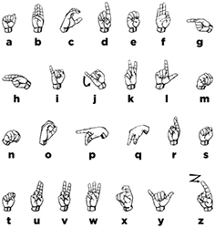

Jonathan Keane
I am a PhD student in Linguistics at the University of Chicago. I also work as a research assistant in the Sign Language Linguistics Lab as well as the Chicago Language Modeling Lab. I have many research interests, particularly articulatory phonetics and phonology, morphology, and computational approaches to each. I am currently working on projects involving sign language phonetics and phonology.
Broadly speaking I'm interested in how humans use their bodies to communicate both linguistically and non-linguistically. My primary focus is on how people, who use sign languages, use their body, arms, and hands in linguistic systems. How are the infinite possible configurations for a given articulator divided into meaningful groups (ie phonological units)? How much variation is allowed within these groups? What are the factors that contribute to this variation?
Since the fall of 2009 I've been working with a research group consisting of researchers specializing in linguistics, speech and language processing, and computer vision, with the goal of developing automated sign language recognition tools. This collaboration fostered my interest in the phonetics of sign languages. I hope to continue to develop models and tools that contribute both to our knowledge of phonetics generally, as well as inform automatic recognizers of fingerspelling.
Research
For a mostly current list of my publications please see my publications.
American Sign Language (asl) fingerspelling
Fingerspelling is used anywhere from 12 to 35 percent of the time in asl, (Padden and Gunsauls, 2003) and as such should not be set aside as extralinguistic. There has only been a small amount of information put together on the phonetics of fingerspelling. The only work on fingerspelling phonetics explicitly that I've found is (Wilcox 1992) as well as (Tyrone et al. 1999).
My current work explores how fingerspelling production, with the ultimate goal of describing and modeling variation that exists in handshape, orientation, timing, &c.
Dissertation project
The aim of my dissertation is to explore handshape as a linguistic system. I'm especially interested in how contextual variation can be modeled based on linguistic (eg articulator activation, phonological features) as well as non-linguistic (eg physiology) factors. To test theories of this variation (as well as others about phonetics, phonology, and their interface), I study how signers produce asl fingerspelling. Studying fingerspelling provides opportunities to find contextual and time conditioned variation in handshape that are relatively limited in signing. This work builds on phonological systems of sign language production, but with a detailed focus on the specific aspects that make up handshapes in asl.
I use a variety of methods including annotated video data and instrumented capture to generate large, robust, quantitative sets of data. Similar methods have a (relatively) long tradition in spoken language linguistics, however they are only beginning to be used to look at signed languages.
Software
Some interesting, and hopefully helpful tools for others. Most of it is software in a very, very broad sense of the word.
Pyelan
I've developed pyelan, a python module that allows for eas[y | ier] extraction and manipulation of annotation data from elan files. Although this is very much a work in progress, some core functionality has been implemented (reading, writing, and some manipulation of eaf files). Please feel free to use, fork, submit issues, and submit pull requests.
PhaseSpaceHelper for PhaseSpace motion capture systems
PhaseSpaceHelper is a python module that contains some convenience functions to deal with synchronizing stimulus presentation and data collection (through smpte timecode), as well as verifying the accuracy of calibration given a set object. Warning: this is very much in active development right now.
SLGloss LaTeX package
In collaboration with Itamar Kastner, I've helped developed the SLGloss LaTeX package to make it easier to typeset sign language glosses. It has three main features:
- It typesets sign glosses in smallcaps to integrate typographically with surrounding text, as well as allows for non-manual markings over specific constituents.
- It typesets fingerspelled words in small caps with hyphens between the letters
- It typesets lists of individual (fingerspelled) letters with hyphens on either side.
asl fingerspelling chart
After seeing many charts that were licensed and reproduced with permission I decided to recreate a fingerspelling chart and release it using a very liberal content license so researchers and educators that need this chart can use it (nearly) freely. The handshapes are based on the font from David Rakowski.
There a few problems with this chart. The biggest problem is that the orientation of many letters is altered to show the configuration of the fingers. In reality, all of the handshapes are made with the palming facing out, away from the signer with the exception of -g- (in, towards the signer), -h- (in, towards the signer), -p- (down), -q- (down) and the end of -j- (to the side)
Download the full sized, completely vector based PDF version.

This work is licensed under a Creative Commons Attribution-ShareAlike 3.0 Unported License.
Better type for LaTeX
In the pursuit of better typography for LaTeX I've found a couple of good walkthroughs, and a couple of invaluable tools. All of the following have been tested on TeX Live 2009, 2010, and 2011 on both OS X 10.5, 10.6, and 10.7.
Minion Pro
I've created a bash script that installs Minion Pro to a local tex live tree with very little user intervention.
otfinst.py
John Owens has developed a great python tool that installs many OpenType fonts. The only stumbling block I found besides some font incompatibilities was assigning (making up) Berry names to the fonts that I wanted to install, which have to be added to the script. I have made up names for the following that seem to follow most of the conventions. If anyone knows of more widespread names for these typefaces please let me know.
- 'Neutraface Text' : 'fne'
- 'Neutraface Display' : 'fn3'
- 'Gotham' : 'fg7'
- 'Gotham Rounded' : 'fg8'
Food
Some interesting, and hopefully helpful musings about food. Most of it is local to Chicago. Some of it might include my adventures in sourcing, preparing, and cooking various foods.
GNR org-mode file
In a quest to go to more of the great neighborhood restaurants from the LTHForum I developed an org-mode list that includes all of the ones listed in the spring of 2010.